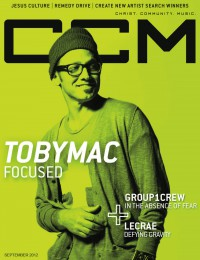

CCM Digital, Sep 2012
| Cover |
|---|
|  |
 Online Exclusively Online Exclusively |
| Writers in this Issue |
| Argyrakis, Andy Aspinwall, Grace S. Conner, Matt Durbin, Emily Greer, Andrew Jackson, Tom Lusk, Caroline Norman, Bebo Siler, Steve |
TobyMac
Cover Feature:- "Focused" by Caroline Lusk
- "In the Absence of Fear" by Caroline Lusk
- "Getting to Know You" by Caroline Lusk
- "Breathing Again" by Grace S. Aspinwall
- "Defying Gravity" by Andrew Greer
- "The F[our] Runners" by Emily Durbin
- "The Broken" by Bebo Norman
- Poema by Matt Conner
- Tim Bowman, Jr. by Andrew Greer
- Stacy Lantz by Andy Argyrakis
- The Museum by Andy Argyrakis
- "Man on a Mission" by Caroline Lusk
- "Orange County Rescue Mission" by Caroline LuskJim Palmer, director, interviewed
- Remedy Drive by Andy Argyrakis
- Andrew Osenga by Andy Argyrakis
- "When It's Time to Walk Away" by Caroline Lusk
- "Community First" by Steve Siler
- Israel Houghton - Jesus at the Center: Live by Andy Argyrakis
- Jared Anderson - The Narrow Road by Andrew Greer
- Jesus Culture - Emerging Voices by Andy Argyrakis
- Andrew Peterson - Light for the Lost Boy by Andy Argyrakis
- Karyn Williams - Only You by Grace S. Aspinwall
- The Sunrise - We Have Not Heard by Andy Argyrakis
- Remedy Drive - Resuscitate by Andy Argyrakis
- The Museum - My Only Rescue by Matt Conner
- Luminate - Welcome to Daylight by Grace S. Aspinwall
- Write This Down - Lost Weekend by Matt Conner
- TobyMac - Eye On It by Matt Conner
- Lynda Randle - 'Til the Storm Passes By by Andrew Greer
- Tamela Mann - Best Days by Matt Conner
- Charles Jenkins & Fellowship Chicago - The Best of Both Worlds by Andrew Greer
- Brandi Carlile - Bear Creek by Grace S. Aspinwall
- Marc Scibilia - Marc Scibilia EP by Andrew Greer
- To Speak of Wolves - Find Your Worth, Come Home by Andrew Greer
- "Ignite Chicago Music Festival, Schaumburg Baseball Stadium, Schaumburg IL" by Andy Argyrakis
- "More than a Set List" by Tom Jackson
Relevant Links
For more information about CCM Digital visit .This issue is available exclusively online.
© 2011 CMnexus. Last updated September 2019. Contact: editor -AT- cmnexus -DØT- org About